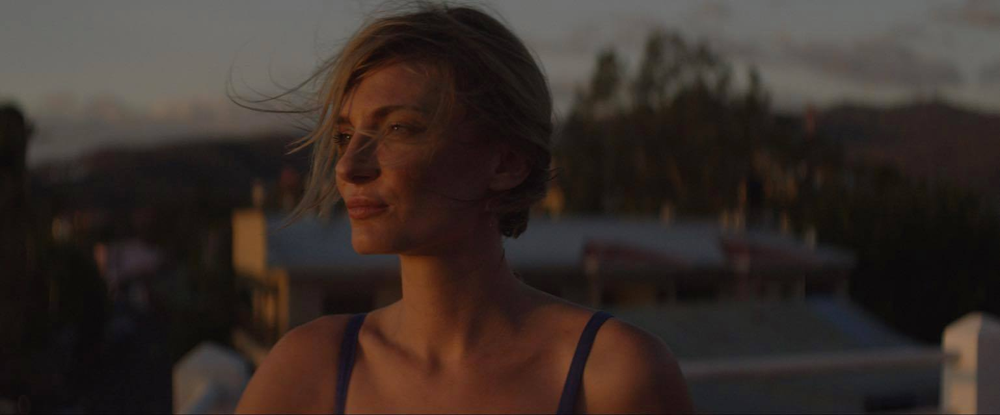

My hometown:
I was born in the Prairies and raised on the coast, in Victoria, B.C.A photo of me:
Before attending Red Academy:
An interesting fact about me:
I once upon a time sang back up on a Juno nominated song called 'Sunday Morning' by award winning Canadian artist K-OS.My best travel experience was:
Shooting a film in France with my husband and best friends because... wine and cheese for every meal. Need I say more?
My secret talent:
Given time and practice, I believe I can learn any accent in the English language.
My goals after I finish the program:
My hope is that I will to be able to work as a freelancer doing Web Development for my community and beyond.
Another Fun Fact:
Instead of doing my second year studies at Capilano University, I would obsessively use HTML to revamp the MySpace Page of my own trifecta friend group called 'Sambrosriel Ladrumpthews' (our names combined).